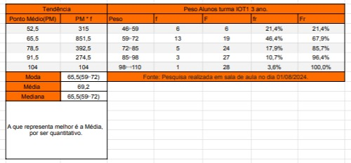

Ciências Humanas
Atividade Destaque
- As Ciências Humanas tratam dos vários assuntos que falam sobre as pessoas, a sociedade e os diversos relacionamentos. Tanto do ponto de vista político, histórico ou ambiental.
- Nesta atividade vimos um filme e tivemos que ler um livro sobre o homem bicentenario, um robo que buscou seus direitos e viveu 200 anos.
Ciências da Natureza
Atividade Destaque
- Ela investiga a origem e evolução da vida, o funcionamento e características dos organismos vivos e sua relação com o ambiente.
- Nesta atividade foi feito um vídeo no estilo documentário, falando sobre Armas Nucleares e o impacto na sociedade, no qual eu editei o vídeo.

Linguagens
Atividade Destaque
- Linguagens é o sistema complexo e dinâmico que os seres humanos usam para comunicar ideias, pensamentos, sentimentos e informações uns aos outros. Por meio de Artes, atividades físicas, e as próprias línguas como Português e Inglês.
- Nesta atividade fizemos uma apresentação para todo o Senac sobre a apresentação Maracatu, onde fizemos todo o figurino e dançamos.

Matemática
Atividade Destaque
- Matemática é a área do conhecimento que envolve o estudo da aritmética, álgebra, geometria, trigonometria, estatística e cálculo, em busca da sistematização de quantidades, medidas, espaços, estruturas e variações.
- Nesta atividade fomos atrás de fazer uma coleta de dados com diversos aspectos como tamanho do calçado, peso do aluno, cor dos olhos e etc. Com estes dados fizemos a Tendência Central.